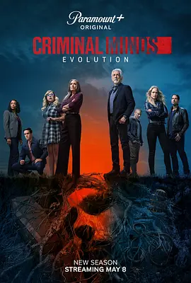

7.1
犯罪心理：演变 第十八季
Criminal Minds: Evolution Season 18
2025
美国
评分 7.1
导演:
贝瑟妮·鲁尼
演员:
乔·曼特纳 / 帕姬·布鲁斯特 / A·J·库克 / 伯克·弗洛伊德 / Adriana Fricke / 亚当·罗德里格兹 / 克斯汀·范奈丝
类型:
剧情,悬疑,犯罪
剧情简介
第十八季的故事从一场余波未尽的袭击开始。距离 Elias Voit 在联邦拘留所遭受围攻已过去六个月，但他在暗网上积累的极端追随者却突然全面行动，案件在全国范围内像野火般蔓延：随机袭击、仪式化杀戮、匿名“召集令”在地下论坛迅速扩散，每一桩都带着高度模仿 Voit 的残忍特征。BAU 在调查中很快意识到，这已不是常规意义上的连环杀手，而是一个被极端化思想驱动的松散“群体”，彼此互不相识，却被同一个“神话化”的名字推向暴力深渊。为了阻断这个组织不断升级的行动，团队不得不再度将 Voit 从牢房深处带到审讯室，试图以他独有的心理视角预测追随者的下一步行动。然而，Voit 的态度始终模棱两可，他似乎愿意合作，却又总是在关键处留下令人不安的空白。他和罗西之间的对峙尤为压迫，罗西在追问中反复试探 Voit 的底线，却也不得不承认，对方比任何嫌犯都更熟悉他们的工作逻辑。普莱提斯必须在利用与防范之间保持微妙平衡，她要确保 Voit 的“建议”不会反噬团队；JJ 在现场与受害者家属沟通时明显感受到社会层面的恐慌扩散，使案件不仅难破，也难以控制情绪走向。Alvez 与 Simmons 则奔赴多个州执行高风险行动，他们在仓库、偏远营地与临时据点之间来回穿梭，追踪这些被鼓动至极端状态的罪犯。加西亚再度陷入网络战的中心，她必须在暗网层层加密中追踪“指令源”，每一次突破都是与黑暗势力的短兵相接。随着案件不断升级，BAU 逐渐意识到 Voit 的追随者并非简单复制，而是在试图创造一种“新秩序”。他们相信暴力能带来意义，甚至将 Voit 的每一次停顿和沉默当作指示。越接近主谋，团队越清楚自己踩入的是一个不断扩散的精神陷阱。这一季以更现代、更网络化的犯罪结构，将 BAU 推到未知领域的边缘。面对比以往更难预测、也更难控制的敌人，他们必须在不信任与必要合作之间走钢丝般前行。